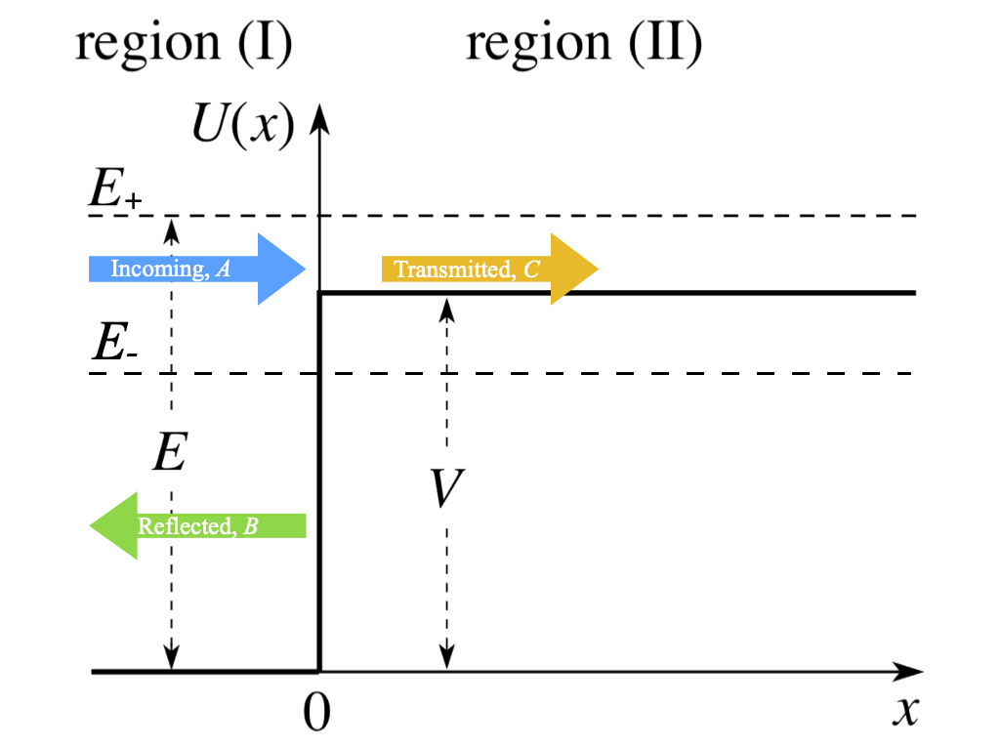
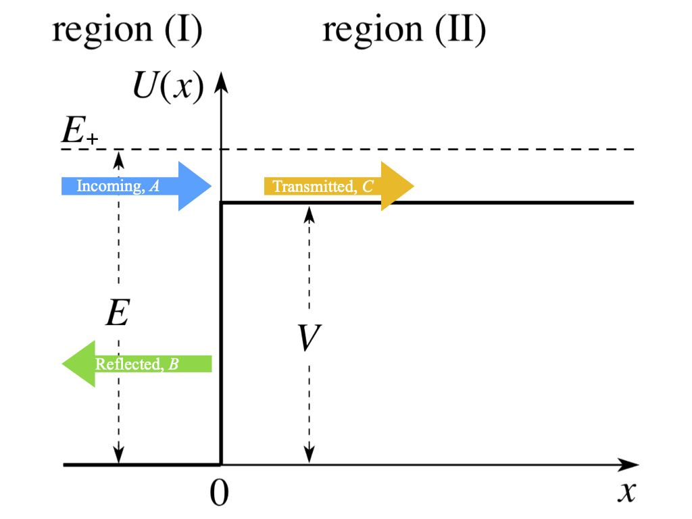
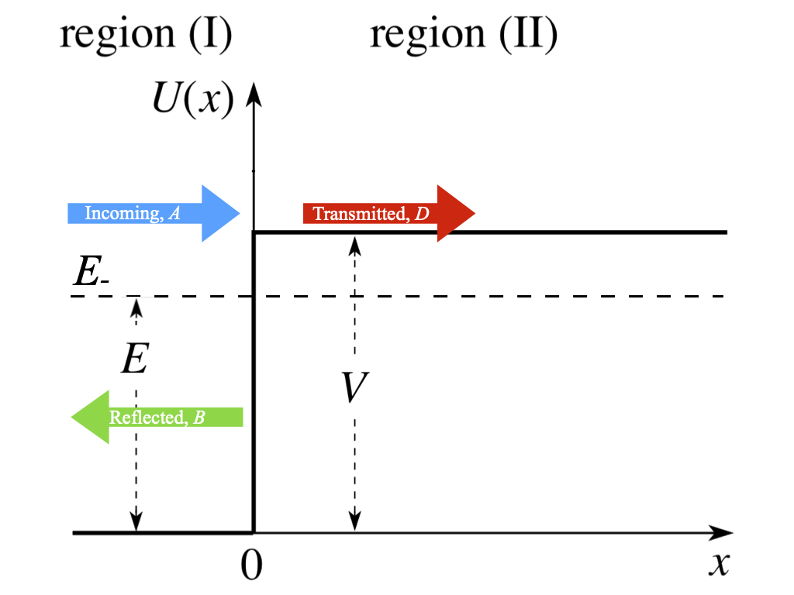
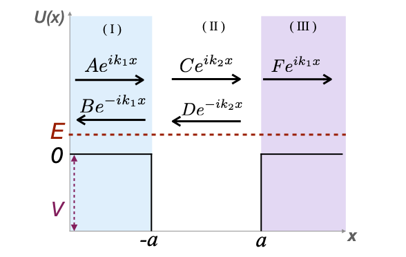
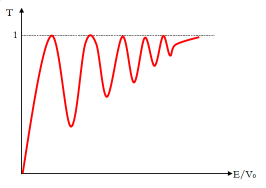
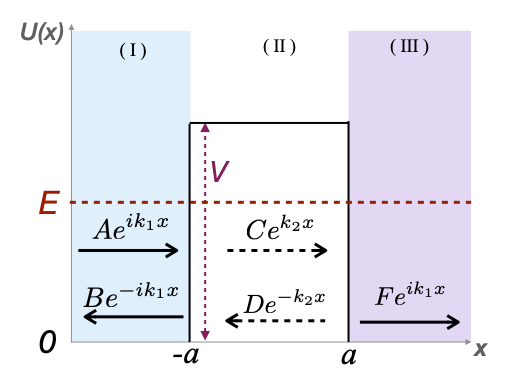

5.1 Scattering states
We now move on to scattering states, i.e. those for which \(E > U(\pm \infty)\). We will specifically look at sharp, finite potential steps — scattering off infinite steps is rather boring: the incoming wavepacket just bounces back — and just like with bound states, this means the solutions are plane waves or decaying exponentials through each distinct \(U(x) = \text{const}\) region.
Unlike the bound states, though, the boundary conditions no longer force the solutions to be real-valued (modulo a trivial phase), meaning that now the probability flux \(\mathbf{J}\propto \psi^*\nabla \psi'^ -\psi\nabla\psi^*\) will be non-zero and the probability “flows” through space.
Generally we saw that, like in the case of free particles, we should describe scattering states using wavepackets. However, this is algebraically very messy, so we’ll work with 1D spatial plane waves, which are a good approximation far from the potential anyway, but the phenomena are the same. Scattering states are not localised in space, so the wavefunctions are not normalisable.
In 1D, right-moving and left-moving plane waves (with t-dependence hidden) have respectively the following forms:
\[ \psi_R \sim e^{ikx}\quad \psi_L \sim e^{-ikx}. \tag{5.1}\]
Let’s see then why a plane wave gives a non-zero flux.
Let’s suppose we have a right-propagating plane wave \(\psi(x)=Ae^{ikx}\). The probability flux is
\[ J=-\frac{i\hbar}{2m}\left(\psi^*\frac{d\psi}{dx}-\psi\frac{d\psi^*}{dx}\right)=\frac{\hbar k}{m}|A|^2=v|A|^2. \tag{5.2}\]
This result applies to any region with constant \(k\).
We will deal with the typical problem of plane waves moving between \(\pm\infty\), encountering step potentials/finite barriers and scattering off them. Note that this is in the infinite-time, steady-state limit! Steps can be higher or lower than \(E\), but not infinite, because in QM, due to its probabilistic nature, there is no region inaccessible to our particle, regardless of its energy, since the matter wave associated with the particle is nonzero everywhere. This is due to tunneling, which we have already encountered in the delta-function potential and in the finite square well.
5.2 Scattering from a step potential
Let’s start with the simple case of a step with a finite potential \(V\), as in Figure 5.1.

In Equation 5.2 we saw that there is a non-zero probability flux for plane waves. This applies to incoming wave, but also to the reflected and transmitted ones in Figure 5.1.
Incident, reflected and transmitted waves have respectively the following forms:
\[ \psi_I(x)=Ae^{ik_1x}, \quad \psi_R(x)=Be^{-ik_1x},\quad \psi_T=Ce^{ik_2x}, \tag{5.3}\]
and corresponding probability fluxes
\[ J_I\propto k_1|A|^2,\quad J_R\propto k_1|B|^2, \quad J_T\propto k_2|C|^2. \tag{5.4}\]
The probability fluxes must satisfy the flux conservation:
\[ J_I=J_R+J_T, \tag{5.5}\]
and this can be normalised to \(J_I\) to give the condition \(R+T=1\), where \(R\) and \(T\) are the flux reflection and transmission factors, i.e.
\[ R=\frac{J_R}{J_I}=\frac{|B|^2}{|A|^2},\quad T=\frac{J_T}{J_I}=\frac{k_2|C|^2}{k_1|A|^2}. \tag{5.6}\]
The flux conservation therefore implies:
\[ R+T=1 \implies k_2|C|^2 = k_1(|A|^2-|B|^2). \tag{5.7}\]
5.2.1 Scattering from “allowed” potential step (\(E>V\))
Let’s consider the case of the incoming plane wave having energy \(E=E_+>V\), as in Figure 5.2.

Let’s split the wavefunction in two parts, for regions I and II on the two sides of the step. These are respectively:
\[ \begin{aligned} \psi_1(x)&=Ae^{ik_1x}+Be^{-ikx}, \quad \text{with} ~k_1=\sqrt{2mE/\hbar^2},\\ \psi_2(x)&=Ce^{ik_2x}, \quad \text{with} ~k_2=\sqrt{2m(E-V)/\hbar^2}. \end{aligned} \]
As usual, let’s impose the continuity condition for the wavefunction and its derivative at the interface between the two regions, i.e. \(x=0\):
\[ \begin{aligned} \psi_1(0) &= \psi_2(0) \implies A+B=C,\\ \psi'_1(0) &= \psi'_2(0) \implies ik_1 A-ik_1 B= ik_2 C \implies k_1(A-B)=k_2C. \end{aligned} \]
Rearranging these, we get:
\[ \begin{aligned} R&=\frac{|B|^2}{|A|^2}=\frac{(k_1-k_2)^2}{(k_1+k_2)^2},\\ T&=\frac{k_2|C|^2}{k_1|A|^2}=1-R = \frac{4k_1k_2}{(k_1+k_2)^2}. \end{aligned} \]
5.2.1.1 Exercise
Consider \(k_2=k_1/2\) with \(A=1\): find wavefunctions and probability distributions. What are the max/min incoming probability densities?
5.2.2 Scattering from “forbidden” potential step (\(E<V\))
Let’s now consider the case of scattering if \(E=E_-<V\), as in Figure 5.3.

Let’s repeat the same procedure even in this case, writing the wavefunctions for the two regions on the sides of the step. The difference now is that in the not-allowed region (II) there can’t be a traveling wave, but there will be an evanescent (exponentially decaying wave) due to tunneling. Therefore:
\[ \begin{aligned} \psi_1(x)&=Ae^{ik_1x}+Be^{-ikx}, \quad \text{with} ~k_1=\sqrt{2mE/\hbar^2},\\ \psi_2(x)&=De^{-k_2x}, \quad \text{with} ~k_2=\sqrt{2m(V-E)/\hbar^2}. \end{aligned} \]
Imposing the continuity condition for the wavefunction and its derivative at the interface between the two regions, i.e. \(x=0\):
\[ \begin{aligned} \psi_1(0) &= \psi_2(0) \implies A+B=D,\\ \psi'_1(0) &= \psi'_2(0) \implies ik_1 A-ik_1 B= -k_2 D \implies k_1(A-B)=-k_2D. \end{aligned} \]
Rearranging these, we get:
\[ \begin{aligned} R&=\frac{|B|^2}{|A|^2}=\frac{|ik_1+k_2|^2}{|ik_1-k_2|^2}=\frac{|z|^2}{|-z^*|^2}=1,\\ T&=1-R=0, \end{aligned} \]
as expected. There is no probability flux beyond the step, in region II, i.e. \(T=0 \implies J_T=0\). However, this does not mean that there is no probability density in that “forbidden region”! As for the bound states, the probability distribution penetrates the wall with typical length scale, or skin depth,
\[ \delta = \frac{1}{2k_2} =\frac{\hbar}{\sqrt{8m(V-E)}}, \tag{5.8}\]
so there is a static probability density in region II - there is no probability current there.
5.3 Scattering from potential well (double step)
Let’s now consider a potential well (or double step), represented in Figure 5.4.

This is not very different from the previous case: the principles are the same, just now it’s a pain from an algebraic point of view cause we have 5 wave components, i.e. 5 amplitudes to deal with! The wavefunctions in the three regions are:
\[ \begin{aligned} \psi_1(x)&=Ae^{ik_1x}+Be^{-ikx}, \quad \text{with} ~k_1=\sqrt{2mE/\hbar^2},\\ \psi_2(x)&=Ce^{ik_2x}+De^{-ik_2x}, \quad \text{with} ~k_2=\sqrt{2m(V+E)/\hbar^2},\\ \psi_3(x)&=Fe^{1k_1x}. \end{aligned} \]
Note that now \(k_2\) is different from the cases we considered earlier, since the plane wave travels from region 1 at higher potential, i.e. zero, to region 2 at lower (negative) potential, i.e. \(-V\). In region 2 you may also use a sum of \(\sin\) and \(\cos\) function instead of the exponential: it doesn’t matter, the treatment is equivalent. Also note that in region 3 the wavenumber is \(k_1\) as in region 1, since the potential is the same.
As always, we need to set up the BCs in two points: \(x=-a\) and \(x=a\).
The business for finding the different amplitudes of reflected and transmitted waves is again performed by applying the continuity and smoothness boundary conditions across each potential step.
The algebra gets messy… I’ll just go straight to the final key result for \(A\) vs \(F\):
\[ 4k_1 k_2 A = [(k_1+k_2)^2 e^{-2ik_2 a}-(k_1-k_2)^2 e^{2ik_2 a}]F e^{2ik_1 a}. \tag{5.9}\]
Such double-steps are officially an algebraic pain in the a…mplitude to solve: not rocket science, just fiddly and heavy on book-keeping, as there are now 5 amplitudes to solve for - check (Bransden and Joachain 1989) for the derivation if you are really curious - and 4 equations given by the BCs, meaning that there is a free parameter. We can then use the normalisation condition - we can’t normalise plane waves, the normalisation comes from \(R+T=1\).
The most interesting take-aways are that the interference of incoming and reflected waves, with the same wavenumber, gives rise to interference patterns in the form of standing waves on the “incident” side of the step. This interference is then seen again within the region between two steps.
5.3.1 Resonant scattering from potential well - Ramsauer effect
Let’s consider 2 possible limits: \(E\gg |V|\) and \(E\ll |V|\) for Equation 5.9 and see how these affect the transmission.
Limit \(E\gg |V|\)
\(E\gg |V| \implies k_1\approx k_2 \equiv k\), therefore Equation 5.9 returns
\[ 4 k^2 A \approx (2k)^2 e^{-2 i k a} F e^{2i ka}, \]
giving the transmission factor
\[ T = |e^{2i ka} e^{-2i ka}|^2 = 1, \]
meaning that if the finite well is “barely visible”, the transmission is perfect.
Limit \(E\ll |V|\)
Let’s consider the limit of Equation 5.9 for \(E\ll|V| \implies k_1\ll k_2\):
\[ \begin{aligned} 4k_1 k_2 A &\approx k_2^2 \left( e^{-2 i k_2 a} - e^{2 i k_2 a} \right) F e^{2i k_1a}\\ &= -2i Fk_2^2\sin(2k_2 a)e^{2ik_1 a}. \end{aligned} \]
Therefore the transmission factor is
\[ T = \frac{|F|^2}{|A|^2} = \frac{4k_1^2}{k_2^2\sin^2(2k_2a)}. \tag{5.10}\]
Note that the argument in the \(\sin\) depends on the amplitude of the well, as well as on the depth of the potential, coming from \(k_2\).
We could plot \(T\) vs \(E/|V|\) and see that it oscillates with oscillations damped from below for higher energies, always with maxima at \(1\), like in Figure 5.5.
This is called the Ramsauer-Townsend effect and it does not have a classical explanation, it is purely a quantum effect due to the wavelength associated to the wavefunction. If the incident wavelength is a multiple of the width of the well, then there is perfect transmission, i.e.
\[ \sin(2ka)\to 0 \implies 2ka=n\pi\implies T=1. \tag{5.11}\]

The resonant transition correspont to the infinite-well solutions where half-wavelengths fit exactly into the well, but now with the BCs switched so the amplitudes are maximal at the well edges.
5.4 Potential barriers and tunneling (\(E<V\))
Let’s now consider the case of a classically forbidden barrier with \(E<V\), as in Figure 5.6.

This case is similar to the previous one when setting up the wavefunctions, but now in region II we have evanescent waves:
\[ \begin{aligned} \psi_1(x)&=Ae^{ik_1x}+Be^{-ikx}, \quad \text{with} ~k_1=\sqrt{2mE/\hbar^2},\\ \psi_2(x)&=Ce^{k_2x}+De^{-k_2x}, \quad \text{with} ~k_2=\sqrt{2m(V-E)/\hbar^2},\\ \psi_3(x)&=Fe^{1k_1x}. \end{aligned} \]
In the case of a classically forbidden barrier, the reflected wave within the barrier also plays a key role, even though they are evanescent rather than propagating waves in that region. The headline result from scattering from a finite-height barrier is that the particle can perform quantum tunnelling in which a finite, albeit exponentially suppressed, wavefunction manages to “leak through” the classically forbidden region and resume its oscillatory behaviour on reaching the classically allowed region on the other side.
We might actually have guessed that such a thing was possible from our previous study of bound states: there is no problem with having two oscillatory regions connected by a classically forbidden region, such as in a double-well. But a non-zero wavefunction does not mean zero flux, and we already saw that a single step with decaying exponential \(\psi(x) = Ce^{−k_2x}\) in the forbidden region carries no flux, and the reflection is perfect: \(R = 1\), \(T = 0\).
The procedure to find the amplitudes is still the same: impose continuity conditions for wavefunction and its derivative.
We obtain, for \(A\) vs \(F\):
\[ 4ik_1k_2 A = [(k_2+ik_1)^2 e^{-2k_2a}-(k_2-ik_1)^2e^{2k_2a}]Fe^{2ik_1a}, \]
which gives the transmission and reflection factors:
\[ \begin{aligned} T &= \left[1+\frac{(k_2^2+k_1^2)^2\sinh^2(2k_2a)}{4k_2^2k_1^2} \right]^{-1}\\ R &= 1-T = \left[1+\frac{4k_1^2k_2^2}{(k_1^2+k_2^2)^2\sinh^2(2k_2a)} \right] \end{aligned} \tag{5.12}\]
How can we have flux on the left- and right-hand sides of the barrier, but no flux within?
The answer is that we can’t: despite containing “real-valued”, exponentially decaying solutions within the barrier, the reflected (left-going) evanescent wave \(Ce^{k_2x}\) has a different overall complex phase (hidden in \(C\)) than its right-going partner \(De^{−k_2x}\). It is hence the phase-interaction of the two decaying waves within the barrier that creates a non-zero flux within the barrier, and the sums of those two evanescent waves on the left and right sides of the barrier that both reduce the reflected amplitude B (so that \(R < 1\)), and increase the overall transmitted amplitude C above zero (\(T = 1\)). Reflections are surprisingly subtle things!
The tunnelling phenomenon is of phenomenal importance, both in human affairs via quantum tunnelling technologies such as scanning tunnelling microscopes, and in deeply important natural processes such as nuclear alpha decay and the inverse process of alpha capture in nuclear fusion and stellar nucleosynthesis.